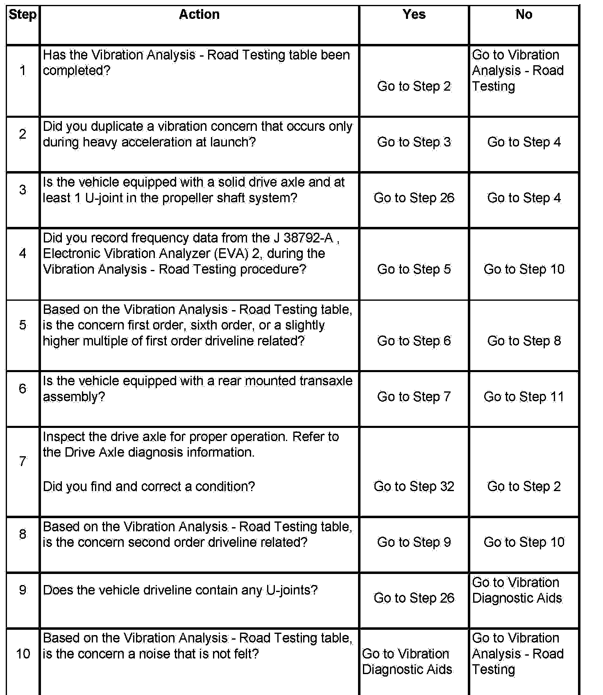
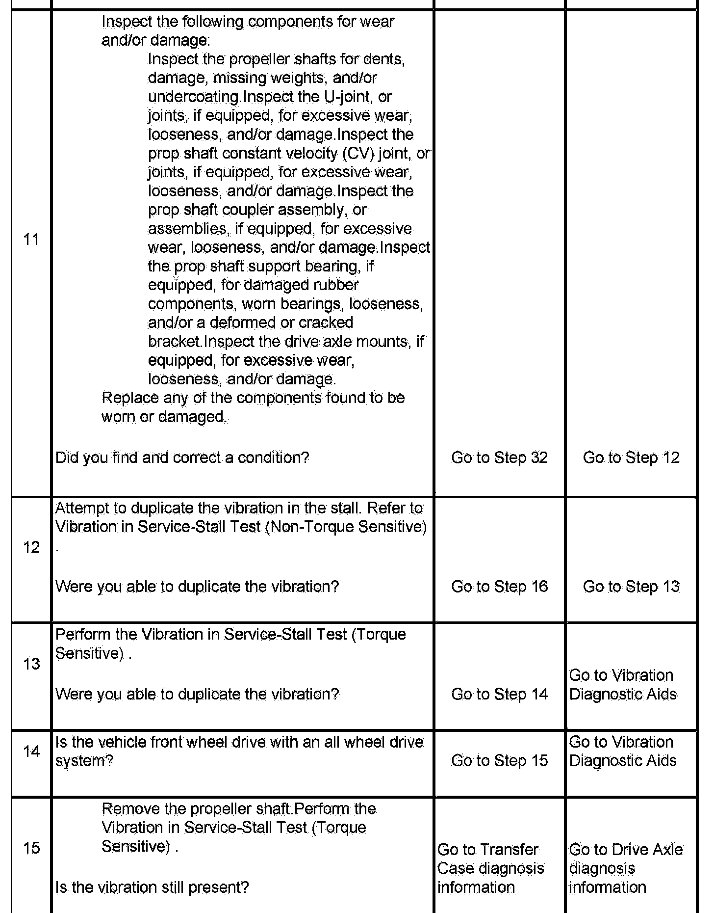
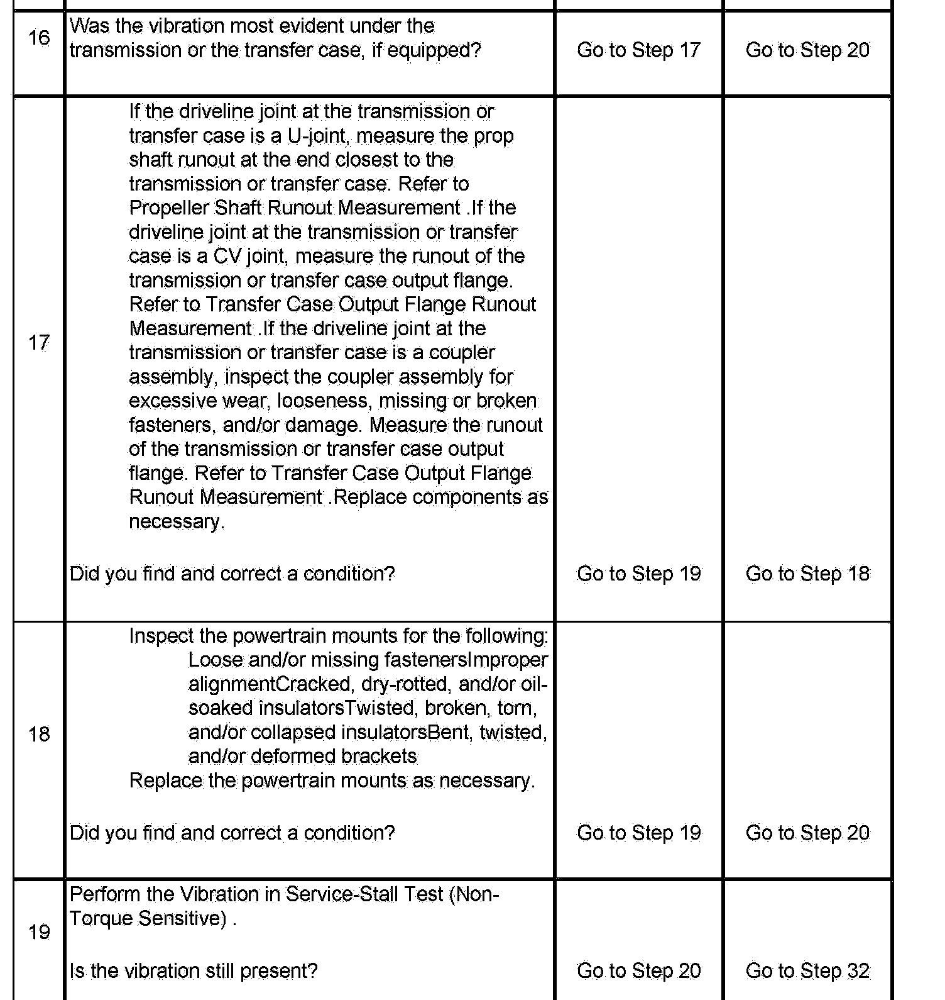
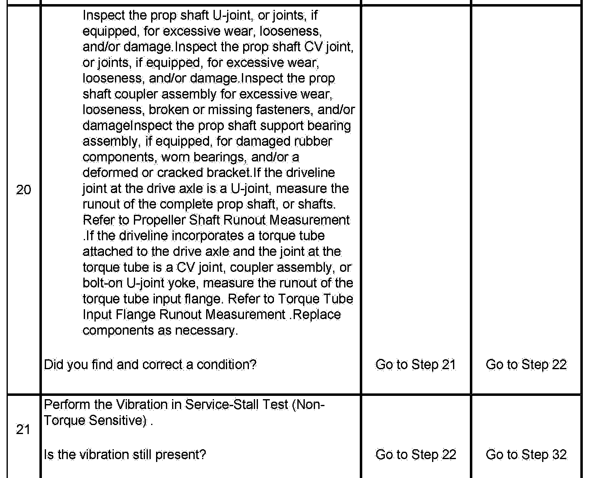
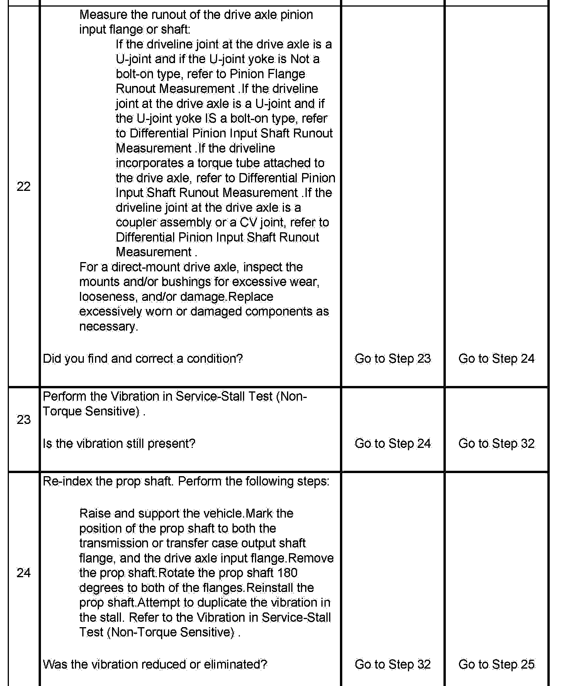
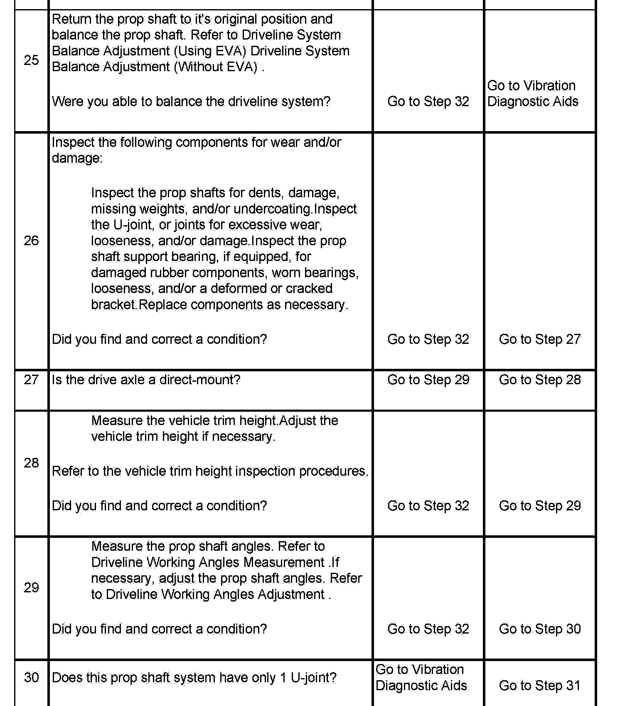
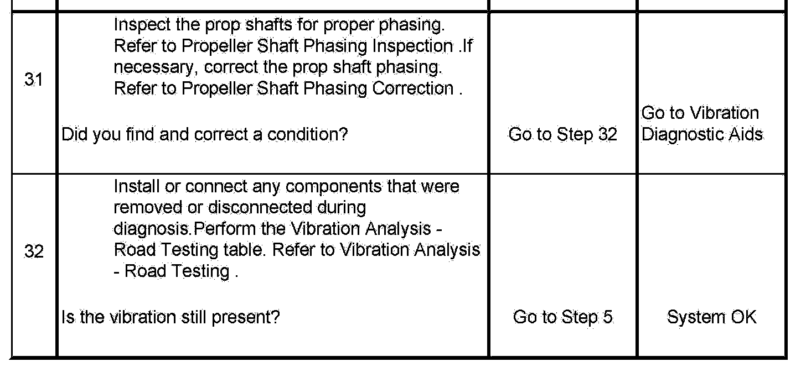

Operation CHARM
: Car repair manuals for everyone.
Home
>>
Cadillac
>>
2007
>>
Escalade ESV AWD V8-6.2L
>>
Repair and Diagnosis
>>
Body and Frame
>>
Testing and Inspection
>>
Vibration Diagnosis and Correction
>>
Diagnostic Information and Procedures
>>
Vibration Analysis - Driveline
Vibration Analysis - Driveline
Vibration Analysis - Driveline






